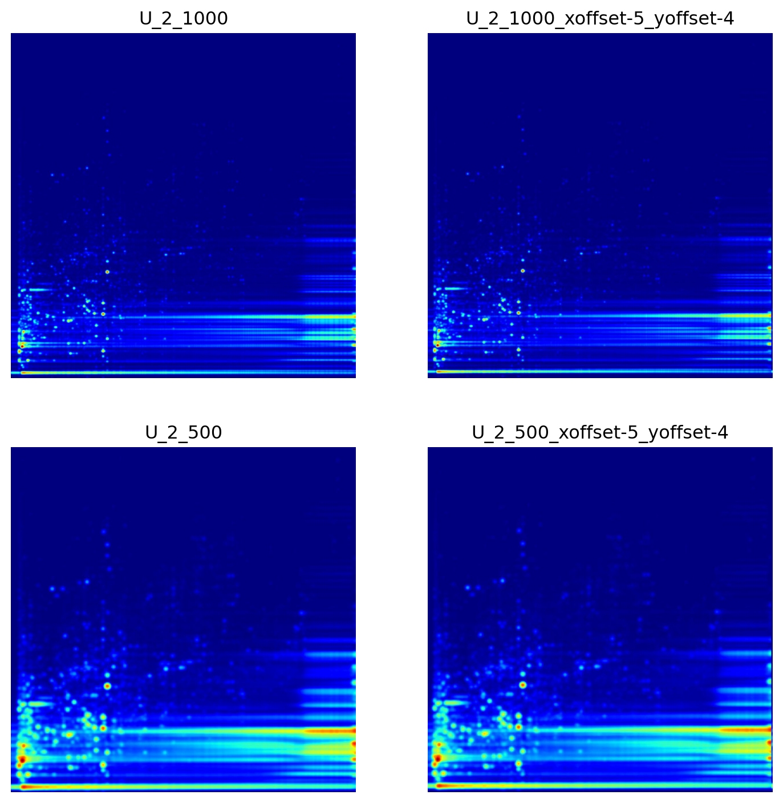
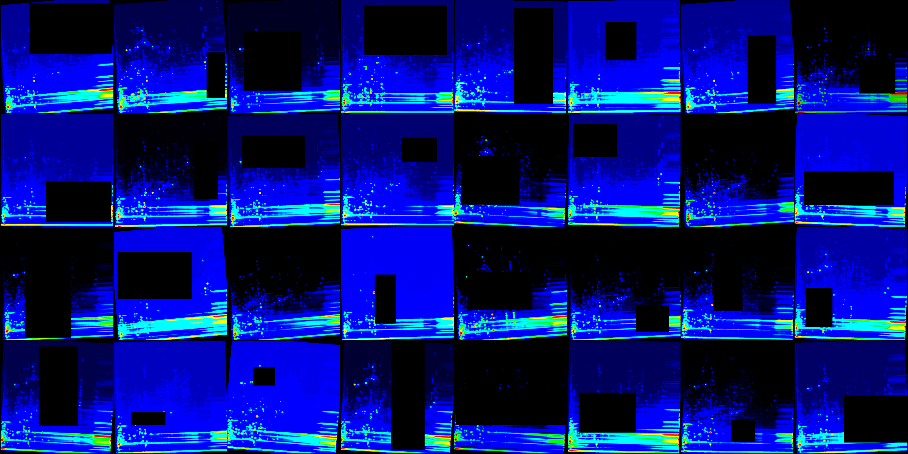
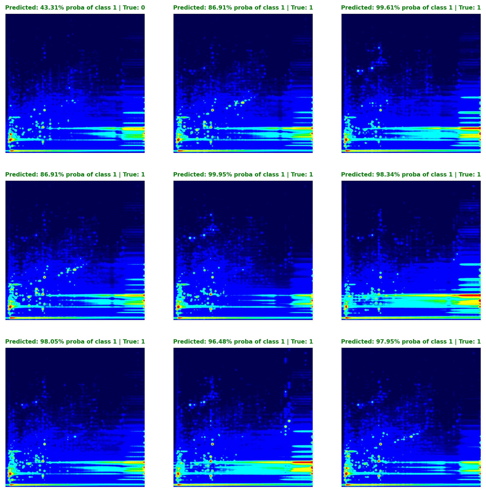
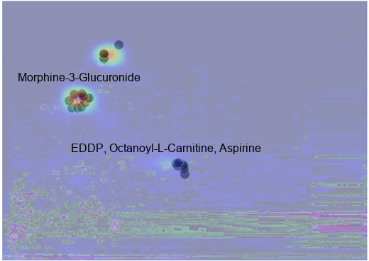
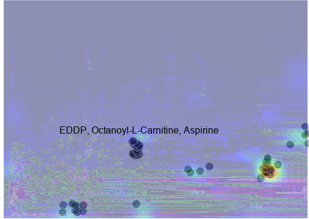

Code
import io
import re
from pathlib import Path
import matplotlib.pyplot as plt
import pandas as pd
import PIL
import seaborn as sns
from PIL import ImageDraw, ImageFont
from typing import TupleAdam Cseresznye
December 23, 2023
Welcome to DeepLCMS, a project that combines mass spectrometry analysis with the power of deep learning models!
Unlike conventional methods, DeepLCMS streamlines the data processing pipeline, bypassing the need for time-consuming and expertise-dependent steps such as peak alignment, data annotation and quantitation. Instead, it relies on the power of deep learning by recognizing important features to directly classify mass spectrometry-based pseudo-images with high accuracy. To demonstrate the capabilities of pre-trained neural networks for high-resolution LC/MS data, we successfully apply our convolutional neural network (CNN) to categorize substance abuse cases. We utilize the openly available Golestan Cohort Study’s metabolomics LC/MS data to train and evaluate our CNN (Pourshams et al. 2010; Ghanbari et al. 2021; Li et al. 2020). We also go beyond classification by providing insights into the network’s decision-making process using the TorchCam library. TorchCam allows us to analyze the regions of interests that influence the network’s classifications, helping us identify key compound classes that play a crucial role in differentiating between them. This approach empowers us to unlock novel insights into the underlying molecular classes and potential pathways that drive phenotypic variations much faster compared to traditional methods.
We believe that applying cutting-edge CNN-based technologies, such as DeepLCMS, for non-discriminatory mass spectrometry analysis has the potential to significantly enhance the field of mass spectrometry analysis, enabling faster, more streamlined, and more informative data interpretation, particularly in domains that demand high-throughput and rapid decision-making processes. Its capacity to directly classify pseudo-images without extensive preprocessing could unlock a wealth of opportunities for researchers and clinicians alike.
DeepLCMS is an open-source project, freely available on GitHub, that aims to provide researchers with a reproducible code-template for leveraging deep learning for mass spectrometry data analysis.
In contrast to traditional methods that involve laborious steps like peak alignment, data annotation, and quantitation, DeepLCMS delivers results significantly faster by approaching LC/MS problems as a computer vision task. This novel approach uses a neuronal network to directly learn from the patterns inherent in the sample in an unbiased way without the need for manual intervention, accelerating the entire workflow.
The study stands out from previous research by conducting a comprehensive evaluation of diverse architecture families, including cutting-edge architectures like vision transformers. Additionally, it employs basic hyperparameter tuning to optimize key parameters such as the optimizer and learning rate scheduler. Furthermore, it examines the impact of image pretreatment on validation metrics, exploring image sharpness and data augmentation techniques that mimic retention time shift. To enhance model generalization, this study takes advantage of regularization techniques like random-tilting images and random erasing during training. Finally, it also explores model interpretability by delving into the decision-making process of the pre-trained network, employing TorchVision for a comprehensive analysis.
While computer vision has gained widespread adoption in various aspects of our lives(Dobson 2023), its application in medical imaging and biosciences has lagged behind, primarily due to limitations in clinical dataset size, accessibility, privacy concerns, experimental complexity, and high acquisition costs. For such applications, transfer learning has emerged as a potential solution(Seddiki et al. 2020). A technique that is particularly effective with small datasets, requiring fewer computational resources while achieving good classification accuracy compared to models trained from scratch. Transfer learning involves a two-step process. Initially, a robust data representation is learned by training a model on a dataset comprising a vast amount of annotated data encompassing numerous categories (ImageNet for example). This representation is then used to construct a new model based on a smaller annotated dataset containing fewer categories.
The use of pre-trained neural networks for mass spectrometry data analysis is relatively new, with only a handful of publications available to date. These studies have demonstrated the potential of deep learning models to extract meaningful information from raw mass spectrometry data and perform predictive tasks without the need for extensive data preprocessing as required by the traditional workflows.
In 2018, Behrmann et al. (2018) used deep learning techniques for tumor classification in Imaging Mass Spectrometry (IMS) data.
In 2020, Seddiki et al. (2020) utilized MALDI-TOF images of rat brain samples to assess the ability of three different CNN architectures – LeNet, Lecun, and VGG9 – to differentiate between different types of cancers based on their molecular profiles.
In 2021, Cadow et al. (2021) explored the use of pre-trained networks for the classification of tumors from normal prostate biopsies derived from SWATH-MS data. They delved into the potential of deep learning models for analyzing raw mass spectrometry data and performing predictive tasks without the need for protein quantification. To process raw MS images, the authors employed pre-trained neural network models to convert them into numerical vectors, enabling further processing. They then compared several classifiers, including logistic regression, support vector machines, and random forests, to accurately predict the phenotype.
In 2022, Shen et al. (2022) released deepPseudoMSI, a deep learning-based pseudo-mass spectrometry imaging platform, designed to predict the gestational age in pregnant women based on LC-MS-based metabolomics data. This application consists of two components: Pseudo-MS Image Converter: for converting LC-MS data into pseudo-images and the deep learning model itself.
To accommodate the high computational demands of neural network training, the DeepLCMS project is divided into two main parts. The first part focuses on data preprocessing, specifically converting LC/MS data into pseudo-images using the PyOpenMS library, which is written in C++ and optimized for efficiency. This task can be handled on a CPU, and the corresponding source code is found in the src/cpu_modules directory.
To effectively train the neural networks, the project utilizes the PyTorch Lightning framework, which facilitates the development of a well-structured, modular codebase. Training experiments are conducted within Jupyter Notebooks running on Google Colab, a cloud platform offering free access to GPUs. The training code and associated modules reside within the src/gpu_modules directory, seamlessly integrating with Google Colab for effortless module imports.
To ensure the feasibility of our proof-of-concept demonstration, we selected a suitable dataset from the Metabolomics Workbench. We prioritized studies with distinct groups and a minimum sample size of 200. Additionally, we selected a dataset with a disk requirement of less than 50 GB to minimize computational resource demands. Based on these criteria, we identified the Golestan Cohort Study (Pourshams et al. 2010). This study, conducted in northeastern Iran comprising approximately 50,000 individuals, primarily investigates the risk factors for upper gastrointestinal cancers in this high-risk region. Quantitative targeted liquid chromatography mass spectrometric (LC-MS/MS) data was obtained for a subset of the cohort and collected at the University of North Carolina at Chapel Hill to identify distinct biochemical alterations induced by opium consumption (Ghanbari et al. 2021; Li et al. 2020). The dataset consisted of 218 opioid users and 80 non-users. After initial data inspection and conversion to mzML format using the ProteoWizard 3.0.22155 software, files were divided into training (n = 214), validation (n = 54), and test (n = 30) sets. To evaluate the impact of image characteristics and augmentation techniques on classification performance, four datasets were prepared. One dataset contained lower quality, more pixalated images due to the bin size set to 500 × 500 using the numpy library’s histogram2d function and was named ST001618_Opium_study_LC_MS_500. Another dataset, while also using bin size of 500 x 500, it also incorporated data augmentation using the augment_images function, generating nine additional images per training set with random offsets of up to 5 units in both x and y directions. This dataset was named ST001618_Opium_study_LC_MS_500_augmented. The third dataset employed a higher bin size of 1000 × 1000 leading to sharper pseudoimages and was named ST001618_Opium_study_LC_MS_1000. The final dataset employed image augmentation technique, generating nine additional images per training set with random offsets of up to 5 units in both x and y directions and used a bin size of 1000 × 1000. It was named ST001618_Opium_study_LC_MS_1000_augmented.
The code base relied on the following software packages and versions on Google Colab: PyTorch Lightning 2.1.3, Pytorch Image Models (timm) 0.9.12, torchinfo 1.8.0, Optuna 3.5.0, TorchCam 0.4.0, pandas 2.1.3, NumPy 1.26, and Matplotlib 3.7.1. The remaining packages and their respective versions can be found in the requirements.txt file.
Mass spectrometry-based pseudo images are generated using the plot_2D_spectra_overview function, which creates a 2D heatmap of the LC/MS data. The function first loads the data in mzML format from the provided file path using the OpenMS library. A 2D histogram is then created, with the x-axis representing the retention time (Rt) and the y-axis representing the m/z values. The intensity values of the histogram are normalized using the highest peak at a given Rt. To enhance the visualization of the data, a Gaussian filter is applied to reduce noise, and the filtered image is scaled to the range 0-255. The histogram is then logarithmically transformed. Finally, pseudoimages are created using matplotlib, with the colormap set to ‘jet’.
To assess the model’s decision-making process and enable interpretability, we analyzed two pooled samples (sp_10 and sp_20) using MS-DIAL (Tsugawa et al. 2015), a data-independent MS/MS deconvolution software, in positive mode applying the default settings. For metabolite identification, the MSP database from the MS-DIAL website was utilized, that contains ESI-MS/MS fragmentation data for 16,481 unique standards.
From the readily available model architecture families provided by Pytorch Image Models, 68 unique ones were selected as representative examples of a given class and filtered based on their parameter count, selecting those with parameters counts between 10 and 20 million to allow for an unbiased comparison. Out of the 68 selected 32 were subsequently underwent training with validation metrics recorded. According to Table 1 (arranged based on validation loss), the MobileOne S3 emerged as the top performer with an F1 score of 0.95. It was followed by DenseNet (F1 = 0.92), MobileViTV2 (F1 = 0.90), and ConvNeXt Nano (F1 = 0.84). RepVit M3 rounded out the top five with an F1 score of 0.86. To delve deeper into the performance of each architecture family, we also evaluated all individual architectures within each family (Table 2).
| Model Family | Validation Accuracy | Validation F1 | Validation Precision | Validation Recall | Validation Loss | Parameter Count (M) | |
|---|---|---|---|---|---|---|---|
| 0 | mobileone_s3.apple_in1k | 0.93 | 0.95 | 1.00 | 1.00 | 0.26 | 10.17 |
| 1 | densenet169.tv_in1k | 0.91 | 0.92 | 0.88 | 1.00 | 0.36 | 14.15 |
| 2 | mobilevitv2_150.cvnets_in22k_ft_in1k_384 | 0.89 | 0.90 | 1.00 | 0.88 | 0.38 | 10.59 |
| 3 | mobilevitv2_150.cvnets_in22k_ft_in1k_384 | 0.89 | 0.90 | 1.00 | 0.88 | 0.38 | 10.59 |
| 4 | convnext_nano.in12k_ft_in1k | 0.76 | 0.84 | 0.74 | 1.00 | 0.42 | 15.59 |
| 5 | repvit_m3.dist_in1k | 0.87 | 0.86 | 0.95 | 1.00 | 0.42 | 10.68 |
| 6 | cait_xxs24_224.fb_dist_in1k | 0.85 | 0.88 | 0.82 | 1.00 | 0.44 | 11.96 |
| 7 | repvgg_a1.rvgg_in1k | 0.80 | 0.86 | 0.77 | 1.00 | 0.45 | 14.09 |
| 8 | efficientformer_l1.snap_dist_in1k | 0.91 | 0.92 | 0.86 | 1.00 | 0.45 | 12.29 |
| 9 | hrnet_w18_small.gluon_in1k | 0.74 | 0.83 | 0.73 | 1.00 | 0.46 | 13.19 |
| 10 | gmlp_s16_224.ra3_in1k | 0.74 | 0.83 | 0.73 | 1.00 | 0.46 | 19.42 |
| 11 | fastvit_sa12.apple_dist_in1k | 0.74 | 0.83 | 0.73 | 1.00 | 0.48 | 11.58 |
| 12 | lambda_resnet26t.c1_in1k | 0.78 | 0.84 | 0.76 | 1.00 | 0.49 | 10.96 |
| 13 | efficientvit_m5.r224_in1k | 0.74 | 0.83 | 1.00 | 1.00 | 0.49 | 12.47 |
| 14 | eca_resnext26ts.ch_in1k | 0.76 | 0.82 | 0.75 | 1.00 | 0.49 | 10.30 |
| 15 | ghostnetv2_160.in1k | 0.72 | 0.82 | 0.72 | 1.00 | 0.50 | 12.39 |
| 16 | nf_regnet_b1.ra2_in1k | 0.89 | 0.91 | 0.88 | 1.00 | 0.50 | 10.22 |
| 17 | coatnet_nano_rw_224.sw_in1k | 0.76 | 0.84 | 0.77 | 1.00 | 0.50 | 15.14 |
| 18 | legacy_seresnet18.in1k | 0.72 | 0.82 | 0.72 | 1.00 | 0.51 | 11.78 |
| 19 | haloregnetz_b.ra3_in1k | 0.74 | 0.83 | 0.74 | 1.00 | 0.51 | 11.68 |
| 20 | xcit_tiny_24_p8_384.fb_dist_in1k | 0.78 | 0.84 | 0.77 | 1.00 | 0.52 | 12.11 |
| 21 | resmlp_12_224.fb_distilled_in1k | 0.72 | 0.82 | 0.72 | 1.00 | 0.52 | 15.35 |
| 22 | gcvit_xxtiny.in1k | 0.72 | 0.82 | 0.83 | 1.00 | 0.53 | 12.00 |
| 23 | resnest14d.gluon_in1k | 0.78 | 0.84 | 0.82 | 1.00 | 0.53 | 10.61 |
| 24 | resnest14d.gluon_in1k | 0.78 | 0.84 | 0.82 | 1.00 | 0.53 | 10.61 |
| 25 | edgenext_base.in21k_ft_in1k | 0.72 | 0.82 | 0.72 | 1.00 | 0.54 | 18.51 |
| 26 | maxvit_nano_rw_256.sw_in1k | 0.78 | 0.84 | 0.78 | 1.00 | 0.54 | 15.45 |
| 27 | coat_mini.in1k | 0.72 | 0.82 | 0.72 | 1.00 | 0.58 | 10.34 |
| 28 | tf_efficientnetv2_b2.in1k | 0.80 | 0.84 | 1.00 | 0.90 | 0.68 | 10.10 |
| 29 | fbnetv3_d.ra2_in1k | 0.65 | 0.76 | 0.76 | 0.82 | 0.82 | 10.31 |
| 30 | rexnet_200.nav_in1k | 0.70 | 0.78 | 0.80 | 0.82 | 0.91 | 16.37 |
| 31 | mixnet_xl.ra_in1k | 0.72 | 0.82 | 0.76 | 1.00 | 1.11 | 11.90 |
As shown in Table 2, the top four positions based on the validation metrics were occupied by models belonging to the ConvNeXt family. These models, particularly the first two (convnext_large_mlp.clip_laion2b_augreg_ft_in1k_384 with validation loss 0.19, convnext_large_mlp.clip_laion2b_augreg_ft_in1k with validation loss 0.22), were pre-trained on the extensive LAION-2B dataset and fine-tuned on ImageNet-1k, enabling them to learn complex patterns that generalize well to unseen data. It is plausible that this extensive dataset and sophisticated model architecture played a pivotal role in their exceptional performance in this task. The dominance of the ConvNeXt family is noteworthy, suggesting their effectiveness in handling complex data such as mass spectrometry pseudoimages. Apple’s MobileOne also demonstrated remarkable results (validation loss = 0.27), ranking fourth in terms of validation loss. Finally, MobileViT (validation loss = 0.27), a lightweight network, secured the seventh position. While the ConvNeXt models consistently outperformed other models in terms of validation metrics, it is essential to recognize that their larger size and higher parameter count translate into increased computational demands for training and heightened susceptibility to overfitting. Their complexity demands careful hyperparameter tuning and regularization techniques to mitigate overfitting and achieve optimal performance.
| Epoch | Experiment | Param Count | Train Accuracy | Train F1 | Train Loss | Train Precision | Train Recall | Validation Accuracy | Validation F1 | Validation Loss | Validation Precision | Validation Recall | |
|---|---|---|---|---|---|---|---|---|---|---|---|---|---|
| 0 | 35 | convnext_large_mlp.clip_laion2b_augreg_ft_in1k... | 200.13 | 0.92 | 0.94 | 0.23 | 0.94 | 0.94 | 0.94 | 0.95 | 0.19 | 0.96 | 0.93 |
| 1 | 42 | convnext_large_mlp.clip_laion2b_augreg_ft_in1k | 200.13 | 0.86 | 0.90 | 0.31 | 0.90 | 0.89 | 0.93 | 0.93 | 0.22 | 0.91 | 0.97 |
| 2 | 41 | convnext_large_mlp.clip_laion2b_soup_ft_in12k_... | 200.13 | 0.90 | 0.93 | 0.25 | 0.91 | 0.96 | 0.94 | 0.95 | 0.22 | 0.96 | 0.93 |
| 3 | 42 | convnext_large_mlp.clip_laion2b_soup_ft_in12k_... | 200.13 | 0.88 | 0.92 | 0.25 | 0.92 | 0.92 | 0.93 | 0.94 | 0.23 | 0.96 | 0.91 |
| 4 | 39 | mobileone_s3.apple_in1k | 10.17 | 0.87 | 0.92 | 0.35 | 0.88 | 0.96 | 0.89 | 0.91 | 0.27 | 0.88 | 0.95 |
| 5 | 45 | convnext_base.clip_laion2b_augreg_ft_in12k_in1... | 88.59 | 0.88 | 0.92 | 0.31 | 0.89 | 0.95 | 0.83 | 0.87 | 0.27 | 0.84 | 0.93 |
| 6 | 35 | convnextv2_large.fcmae_ft_in22k_in1k_384 | 197.96 | 0.86 | 0.91 | 0.35 | 0.87 | 0.94 | 0.94 | 0.96 | 0.27 | 0.97 | 0.95 |
| 7 | 49 | mobilevitv2_200.cvnets_in22k_ft_in1k_384 | 18.45 | 0.91 | 0.94 | 0.34 | 0.95 | 0.93 | 0.94 | 0.95 | 0.27 | 1.00 | 0.91 |
| 8 | 44 | convnext_large.fb_in22k_ft_in1k_384 | 197.77 | 0.86 | 0.90 | 0.35 | 0.87 | 0.94 | 0.85 | 0.88 | 0.30 | 0.85 | 0.91 |
| 9 | 37 | convnextv2_base.fcmae_ft_in22k_in1k_384 | 88.72 | 0.81 | 0.87 | 0.37 | 0.84 | 0.91 | 0.91 | 0.90 | 0.30 | 0.96 | 0.86 |
To further assess the suitability of these models and the consistency of their performance, we trained the top three performing models from each family five consecutive times and calculated the median and standard deviation of their validation metrics (Figure 1). This approach allowed us to identify the models that exhibited the most consistent validation performance across multiple training runs. Statistical significance across replicates was evaluated using Dunn’s test with Benjamini-Hochberg correction. The results revealed that the MobileViT2 family performed similarly to the ConvNeXt across all five training runs, except for the validation losses where ConvNeXt exhibited the lowest values with 0.21. According to the replication study, the ConvNeXt emerged as the most effective model, surpassing both MobileOne and MobileViT2. Despite exhibiting similar patterns, ConvNeXt exhibited a statistically significant advantage over MobileViT2 in validation loss (p = 0.01) and achieved significantly better validation recall (p < 0.05). Among the three models tested, MobileOne consistently underperformed its counterparts in all performance metrics, except for validation recall, where it narrowly outperformed MobileViT2 (p < 0.05). In light of these findings, we opted to use the ConvNeXt large model in further experiments.
Next, we explored the impact of image sharpness and offsets along the x and y axis as a method for image augmentation to replicate the effects of Rt shifts and incidental mass calibration drifts. Figure 2 illustrates how the number of bins employed in the np.histogram2d function within the plot_2D_spectra_overview function—which serves to transform LC/MS files into pseudo images—influences the image sharpness. Here, the bins parameter signifies the number of bins in both the x and y dimensions, which are represented by nx and ny, respectively. This results in the formation of an nx by ny bin grid across the data for the histogram. By increasing the number of bins (from 500, 500 to 1000, 1000), one could obtain a sharper image, but it could also lead to increased noise and computational complexity.
Furthermore, we sought to evaluate the impact of image augmentation, specifically the generation of multiple, modified images prior to image training, on the validation metrics. The augment_images function applies random offsets to the specified image, producing a designated number— 9 in our case—of augmented images with a maximum horizontal offset of five and a maximum vertical offset of five pixels.
img_paths = list(Path.cwd().glob("exp_3_U_2*"))
fig = plt.figure(figsize=(9, 9))
rows, cols = 2, 2
for idx, img_path in zip(range(1, rows * cols + 1), img_paths):
fig.add_subplot(rows, cols, idx)
img = PIL.Image.open(img_path).convert("RGB")
plt.imshow(img)
plt.title(img_path.stem[6:])
plt.axis(False)
Figure 3 illustrates, image sharpness in combination with image augmentation had a significant impact on the validation loss. Setting the bin size to 500 and subsequent augmentation resulted in the lowest validation loss (0.129) and the highest validation F1 (0.982). Based on these findings, less image sharpness and more training images, obtained through data augmentation prior to training, had a beneficial effect on the validation metrics. Taken together, the final training and fine-tuning is conducted on images with bin size set to 500 and subsequent augmentation applied resulting in the generation of nine extra samples per training image.
Optuna, an open-source hyperparameter optimization framework, delivers an automated and efficient approach for optimizing hyperparameters for machine learning and deep learning models. The framework operates by defining an objective function that could be either maximized or minimized. This function encapsulates the model and the metric to be optimized. Within the objective function, hyperparameters are suggested using a trial object. Optuna supports various types of hyperparameters, including float, integer, and categorical. The core of Optuna’s operation lies in its optimization process, which employs state-of-the-art algorithms to search the hyperparameter space efficiently. It can also prunes unpromising trials to conserve computational resources. To optimize the model’s performance, we employed Optuna to identify the most effective optimizer from a pool of four: Adam, AdamW, Adamax, and RMSprop. Additionally, we sought an optimal learning rate scheduler, choosing between CosineAnnealingLR and ReduceLROnPlateau, based on the validation loss achieved during training. After extensive optimization, the combination of Adamax optimizer and CosineAnnealingLR learning rate scheduler yielded the lowest validation loss (0.23), resulting in its selection for subsequent experiments.
The final model training was conducted using the optimal settings determined during the optimization experiments, employing transfer learning of a pre-trained ConvNeXt large model, with all of its layers frozen except for the last classification head. The learning rate was automatically determined to be 0.006 based on the learning rate finder tool implemented by PyTorch Lightning. For the training, we utilized the augmented dataset (Figure 4) that featured bin size set to 500 for both dimensions. To prevent overfitting and promote better generalization capabilities, random erasing (probability=1.00) and color jitter (probability=0.25) were used. This technique effectively augments the training data, prompting the model to minimize its dependence on specific regions of the image thus preveting the model from memorizing limited patterns and encourages it to generalize better to unseen data. The underlying concept resembles a dropout layer, a common component of neural network architectures. The optimized model achieved validation metrics with loss of 0.138, validation precision of 0.963, F1 0.946, validation accuracy exceeding 0.944, and validation recall reaching 0.93.
During training, we employed early stopping to prevent overfitting, terminating training if the validation loss fails to improve for 10 consecutive epochs. Additionally, we utilized PyTorch Lightning’s built-in ModelCheckpoint to save the best-performing model, ensuring that the model that achieved the highest validation metrics was preserved and evaluated later on.

After the training was completed, the best-performing model was reloaded, and test metrics were calculated using the 30 test samples present in our dataset. According to the final evaluation, the model produced 20 True Positives, 7 True Negatives, 2 False Negatives, and 1 False Positive.
These results translate to: Precision = 0.952, Recall = 0.909, F1 = 0.930, Accuracy = 0.90.
While the model achieved impressive validation metrics, the slight drop of performance on the test set compared to the validation metrics indicates potential overfitting. Further optimization of the model, particularly during the method optimization phase, could be achieved through cross-validation strategies. However, this approach might necessitate excessive computational resources.
To assess the model’s confidence in its predictions, we can transform the model’s raw output, which is the binary cross-entropy loss derived from a set of logits obtained using PyTorch’s BCEWithLogitsLoss function, into prediction probabilities using a sigmoid function. These converted values reflect the probability that the model assigns to a given prediction belonging to Class 1 (Opioid User). Figure 5 illustrates this concept, showing that in the first instance, the model estimates a 43% probability of the instance belonging to Class 1, suggesting a higher likelihood of it being a Non-Opioid User (and this prediction proved correct).

To gain insights into the regions of an image our model focuses on when making a prediction, we employed LayerCAM, a tool from the TorchCam package. LayerCAM (Jiang et al. 2021), short for Layer Class Activation Maps, is a technique for generating class activation maps from distinct layers of a CNN. These regions of interests highlight key features the model utilizes to differentiate between opioid users and non-opioid users. Class activation maps are typically derived from the final convolutional layer of a CNN, highlighting discriminative object regions for the class of interest. Such a tool could be particularly valuable for validating the insights derived from our deep learning model, particularly when compared to more targeted or untargeted metabolomics data.
To gain a better understanding of the specific metabolic features that influence the model’s decision-making process in classifying individuals into either group, we analyzed two examples of the pooled samples using MS-DIAL (Tsugawa et al. 2015), an open-source software pipeline designed for data-independent MS/MS deconvolution and identification of small molecules. Subsequently, metabolite annotation was performed using the MSP database, which houses ESI-MS/MS fragmentation data for 16,481 unique authentic standards. The MSP database served as the basis for assigning compound identification levels: 999 denoted instances where MS-DIAL could not identify the feature due to missing MS/MS fragmentation spectrum or non-matching library entries. A tentative identification was assigned with 530, indicating a match based on accurate mass comparison. A more confident tentative identification was marked with 430, indicating spectral correspondence between the feature and the library entry’s MS/MS spectrum.
To leverage the untargeted metabolomics data, we can, for example, construct a function similar to overlay_untargeted_data, which facilitates the extraction of specific regions from the feature map derived from MS-DIAL based on retention time and accurate mass. These extracted features can be overlaid as a scatter plot alongside our activation map. This approach, in theory, should provide a deeper understanding of the features that play a crucial role in differentiating between the various classes.
def overlay_untargeted_data(
query_str: str,
ms_dial_location: Path,
background_image_location: Path,
crop_area: Tuple[int, int, int, int],
):
"""
Overlay untargeted metabolomics data on a background image.
Parameters:
- query_str (str): Query string for filtering the data.
- ms_dial_location (str): Location of the mass spectrometry data file.
- background_image_location (str): Location of the background image.
- crop_area (tuple): Coordinates for cropping the background image (left, upper, right, lower).
Returns:
- composite_img (PIL.Image.Image): Overlay of data on the background image.
- df (pd.DataFrame): Filtered and processed DataFrame.
"""
# Read and preprocess the mass spectrometry data
df = (
pd.read_csv(
ms_dial_location,
skiprows=4,
usecols=[
"Average Rt(min)",
"Average Mz",
"Metabolite name",
"Ontology",
"Annotation tag (VS1.0)",
"MS/MS matched",
"SP_10",
"SP_20",
],
)
.rename(columns=lambda x: re.sub(r"\W|[%/]", "_", x.lower()))
.query("annotation_tag__vs1_0_ == '430' or annotation_tag__vs1_0_ == '530'")
.query(query_str)
.drop_duplicates(subset="metabolite_name")
)
# Create scatterplot
sns.scatterplot(
data=df,
x="average_rt_min_",
y="average_mz",
alpha=0.5,
s=100,
color="black",
)
# Set plot limits and turn off axis
plt.ylim(50, 750)
plt.xlim(0, 20)
plt.axis(False)
# Create the foreground image
buf = io.BytesIO()
plt.savefig(buf, format="jpeg", bbox_inches="tight", pad_inches=0)
buf.seek(0)
foreground = PIL.Image.open(buf)
plt.close()
# Create the background image
background = (
PIL.Image.open(background_image_location)
.convert("RGB")
.crop(crop_area)
.resize(foreground.size)
)
# Create a mask
mask = PIL.Image.new("L", foreground.size, 128)
# Composite the images
composite_img = PIL.Image.composite(background, foreground, mask)
return composite_img, dfAs illustrated in Figure 7, and Figure 8, the most notable features identified by MS-DIAL with levels 430 and 530 are overlaid with two examples of the activation map generated by TorchCam. Importantly, morphine-3-glucuronide (Level 530), a major metabolite of morphine, stands out as a key feature influencing the model’s decision-making process. Additionally, EDDP (Level 430), a major metabolite of methadone, a synthetic opioid agonist used for chronic pain and opioid use disorder, is also considered by the model. While we observed tentative evidence suggesting that the metabolic pathways involving Kreb’s cycle, purine metabolism, central carbon metabolism, histone modification, and acetylation are also considered by the model, as it was pointed out by Li et al. (2020), the level of identification (530) indicates that these identifications are based solely on accurate mass measurement alone thus further investigation is warranted to confirm the identities of these potential biomarkers (Table 3).
composite_img_pattern_1, pattern_df_1 = overlay_untargeted_data(
query_str="3.5<average_rt_min_<5 and 460<average_mz<500 or 5<average_rt_min_<6.5 and 575<average_mz<650 or 9.5<average_rt_min_<10 and 280<average_mz<320",
ms_dial_location="PeakID_0_2023_12_25_17_39_09.csv",
background_image_location="exp-5-plot_activation.png",
crop_area=(25, 90, 850, 910),
)
font = ImageFont.truetype("arial.ttf", 16)
# Create a Draw object
draw = ImageDraw.Draw(composite_img_pattern_1)
# Draw the texts at different locations
draw.text((25, 100), "Morphine-3-Glucuronide", (0, 0, 0), font=font)
draw.text((100, 200), "EDDP, Octanoyl-L-Carnitine, Aspirine", (0, 0, 0), font=font)
composite_img_pattern_1
composite_img_pattern_2, pattern_df_2 = overlay_untargeted_data(
query_str="(16.5<average_rt_min_<18 and 180<average_mz<250) or (4<average_rt_min_<5.5 and 50<average_mz<100) or (8<average_rt_min_<12 and 50<average_mz<100) or (8.5<average_rt_min_<9 and 250<average_mz<300) or (12<average_rt_min_<14 and 200<average_mz<220) or (18<average_rt_min_<20 and 280<average_mz<350)",
ms_dial_location="PeakID_0_2023_12_25_17_39_09.csv",
background_image_location="exp-5-plot_activation.png",
crop_area=(20, 1070, 850, 1890),
)
ImageDraw.Draw(composite_img_pattern_2).text(
(100, 210), "EDDP, Octanoyl-L-Carnitine, Aspirine", (0, 0, 0), font=font
)
composite_img_pattern_2
| average_rt_min_ | average_mz | metabolite_name | ontology | annotation_tag__vs1_0_ | ms_ms_matched | |
|---|---|---|---|---|---|---|
| 3076 | 9.998 | 283.24149 | w/o MS2: 2-(N-butylacetamido)-N-cyclohexylbuta... | Tertiary carboxylic acid amides | 530 | False |
| 3297 | 9.938 | 297.06689 | w/o MS2: clausenin methyl ether | Linear pyranocoumarins | 530 | False |
| 3379 | 9.938 | 301.06268 | w/o MS2: 3(2'-Chlorophenyl)-7-ethoxycoumarin | Isoflav-3-enones | 530 | False |
| 3459 | 9.599 | 305.09894 | heraclenol | Psoralens | 430 | True |
| 3510 | 9.917 | 308.22070 | w/o MS2: Dihydrocapsaicin | Methoxyphenols | 530 | False |
| 3571 | 9.543 | 312.15945 | w/o MS2: atropine | Tropane alkaloids | 530 | False |
| 3587 | 9.622 | 313.06686 | w/o MS2: (-)Catechin | Catechins | 530 | False |
| 5424 | 3.893 | 460.15945 | w/o MS2: Villol | Rotenones | 530 | False |
| 5425 | 4.167 | 460.19565 | w/o MS2: Apixaban | Phenylpiperidines | 530 | False |
| 5444 | 4.369 | 462.17502 | w/o MS2: Morphine_3_Glucuronide | Morphinans | 530 | False |
| 5557 | 4.553 | 474.17270 | w/o MS2: Raloxifene | Aryl-phenylketones | 530 | False |
| 5611 | 3.744 | 480.09711 | w/o MS2: FOLIC ACID | Glutamic acid and derivatives | 530 | False |
| 5655 | 4.720 | 486.19623 | w/o MS2: Smenathiazole B | N-acyl-alpha amino acids and derivatives | 530 | False |
| 5668 | 4.802 | 488.15448 | w/o MS2: Dasatinib (BMS-354825) | Aromatic anilides | 530 | False |
| 5686 | 4.539 | 490.07681 | w/o MS2: Vemurafenib (PLX4032) | Aryl-phenylketones | 530 | False |
| 5709 | 4.486 | 492.24979 | w/o MS2: Hypaconine | Aconitane-type diterpenoid alkaloids | 530 | False |
| 5731 | 4.002 | 496.15677 | w/o MS2: NCGC00380381-01_C24H27NO9_ | Saccharolipids | 530 | False |
| 5743 | 4.409 | 498.17252 | w/o MS2: Tebipenem pivoxil (L-084) | Thienamycins | 530 | False |
| 6249 | 5.595 | 591.15735 | w/o MS2: Mulberroside A | Stilbene glycosides | 530 | False |
| 6264 | 5.595 | 595.13904 | w/o MS2: Tiliroside | Flavonoid 3-O-p-coumaroyl glycosides | 530 | False |
| 6292 | 5.613 | 604.17505 | w/o MS2: SSR126768 | Dimethoxybenzenes | 530 | False |
| 6294 | 5.595 | 605.17346 | w/o MS2: Naringin dihydrochalcone | Flavonoid O-glycosides | 530 | False |
| 6359 | 6.428 | 630.22260 | w/o MS2: NCGC00347814-02_C29H37NO13_ | Benzylisoquinolines | 530 | False |
| 72 | 4.042 | 72.08070 | w/o MS2: Pyrrolidine; CE10; RWRDLPDLKQPQOW-UHF... | Pyrrolidines | 530 | False |
| 75 | 4.985 | 72.08073 | w/o MS2: Pyrrolidine; CE0; RWRDLPDLKQPQOW-UHFF... | Pyrrolidines | 530 | False |
| 78 | 4.943 | 73.06469 | w/o MS2: BUTANAL | Alpha-hydrogen aldehydes | 530 | False |
| 94 | 5.348 | 76.03080 | w/o MS2: Glycine | Alpha amino acids | 530 | False |
| 104 | 4.844 | 78.03378 | 2-Aminoethanethiol | Alkylthiols | 430 | True |
| 173 | 4.943 | 89.05956 | w/o MS2: Isobutyric acid | Carboxylic acids | 530 | False |
| 218 | 5.358 | 95.04900 | w/o MS2: Phenol | 1-hydroxy-4-unsubstituted benzenoids | 530 | False |
| 222 | 4.071 | 95.06035 | w/o MS2: 4-Methylpyrimidine | Pyrimidines and pyrimidine derivatives | 530 | False |
| 226 | 4.844 | 96.04424 | 3-Hydroxypyridine | Hydroxypyridines | 430 | True |
| 252 | 8.776 | 98.98405 | w/o MS2: Ortophosphate | Non-metal phosphates | 530 | False |
| 253 | 4.658 | 99.04393 | w/o MS2: alpha-Methylene-gamma-butyrolactone | Gamma butyrolactones | 530 | False |
| 1393 | 16.813 | 181.04948 | Aspirin | Acylsalicylic acids | 430 | True |
| 1566 | 17.420 | 191.98239 | w/o MS2: 2-Chlorobenzenesulfonamide | Benzenesulfonamides | 530 | False |
| 1613 | 17.092 | 194.97618 | w/o MS2: Orotic Acid | Pyrimidinecarboxylic acids | 530 | False |
| 1689 | 17.184 | 198.99387 | w/o MS2: Tioconazole | Benzylethers | 530 | False |
| 1690 | 17.155 | 199.01105 | w/o MS2: PUTRESCINE DIHYDROCHLORIDE | Monoalkylamines | 530 | False |
| 1701 | 17.223 | 199.13049 | w/o MS2: Tacrine | Acridines | 530 | False |
| 1720 | 12.290 | 200.23743 | w/o MS2: N-Methyldodecylamine | Dialkylamines | 530 | False |
| 1784 | 12.903 | 204.08629 | w/o MS2: alpha-oxo-1h-indole-3-propanoic acid | Indolyl carboxylic acids and derivatives | 530 | False |
| 1802 | 17.464 | 205.00497 | w/o MS2: Tilt(TM) | Dichlorobenzenes | 530 | False |
| 1862 | 17.487 | 209.00053 | w/o MS2: Kynurenine | Alkyl-phenylketones | 530 | False |
| 1872 | 12.139 | 209.11678 | w/o MS2: Primin | P-benzoquinones | 530 | False |
| 1897 | 17.206 | 210.97739 | w/o MS2: AZELAIC ACID | Medium-chain fatty acids | 530 | False |
| 1923 | 16.999 | 212.97305 | w/o MS2: Aconitic Acid | Tricarboxylic acids and derivatives | 530 | False |
| 2034 | 13.514 | 219.19563 | w/o MS2: Tributylphosphine oxide | Organophosphine oxides | 530 | False |
| 2107 | 17.939 | 224.99295 | w/o MS2: 3-Hydroxykynurenine | Alkyl-phenylketones | 530 | False |
| 2119 | 17.230 | 225.99634 | w/o MS2: Cyprodinil | Aniline and substituted anilines | 530 | False |
Although this is not the only approach to understanding the principles upon which the model bases its decisions, we believe that combining CNNs with MS/MS fragmentation-based untargeted metabolomics can be used as an example to gain a better understanding of the underlying mechanisms. Conversely, the model can also guide researchers in directing resources and efforts towards identifying specific regions of interest more effectively by performing more targeted measurements, such as MS/MS experiments, since we already know which features play significant roles in distinguishing between the classes. In particular, we recognize the potential benefits of such a model in high-throughput settings where rapid decisions are required, although thorough validation remains essential. This approach could be highly valuable in conjunction with techniques such as untargeted metabolomics and lipidomics, where an unbiased assessment of the phenotype is desirable, especially, when combined with simple sample preparation techniques such as protein precipitation.
While the use of CNNs in high-throughput settings holds immense potential, it is crucial to acknowledge potential drawbacks. Further research is essential to understand how image preprocessing techniques can influence the decision-making process. Currently, we only implemented basic techniques, such as scaling, Gaussian noise reduction, and logarithmic transformation. The number of training examples could also pose a challenge. While transfer learning, as we demonstrated, does not demand a plethora of training examples, we still required over 200 samples for training. Nonetheless, once sufficient number of images are obtained for the initial training, one can retrain the model as new data becomes available. Additionally, it is essential to exercise caution against overfitting. While we implemented several strategies to mitigate overfitting and enhance generalizability, our testing metrics indicate a slight overfitting compared to the validation metrics. However, employing cross-validation may help address this issue. Finally, GPU availability is crucial for neural network training. While transfer learning does not require as much computational resources as training a network from scratch, utilizing a GPU is still recommended. Hence, having access to a GPU is highly advised. This project utilized the freely available GPU (NVIDIA Tesla T4) as part of the Google Colab. Once experimentation is complete, depending on the size of the model selected, inference may be able to be performed using a CPU.
This project serves as a proof-of-concept demonstrating the application of transfer learning in a binary classification task using untargeted LC/HRMS metabolomics data. We explored various CNN architectures and optimized hyperparameters, such as optimizer type and learning rate scheduler, to achieve optimal performance. Additionally, we utilized TorchCam to visualize the regions of the pseudoimage the neural network focuses on for distinguishing between opioid users and non-users. Furthermore, we incorporated traditional techniques, including spectral deconvolution and MS/MS fragmentation pattern-based identification, to enhance our understanding of the CNN’s decision-making process. We hope this open-source project could serve as a valuable guideline for researchers seeking to develop CNN based applications following rigorous validation. We could also envision a system, for example, where positive instances identified by the initial network could be further evaluated by a second one capable of estimating quantities using a regression model with mean squared error loss. Overall, this project aims to demonstrate the practical application of untargeted metabolomics data in combination with modern techniques such as computer vision and neural networks. We believe that the primary obstacle hindering the widespread adoption of metabolomics and lipidomics is not sample preparation or instrumentation but the human expertise required for data interpretation and analysis. We hope that projects like DeepLCMS encourage researchers to embrace novel resources and empower a broader audience to benefit from recent technological advancements.
Did this project help with your research? Do you have any ideas for making it better? Get in touch! We would love to hear from you.
---
title: 'DeepLCMS: A framework that leverages transfer learning for the classification of pseudo images in mass spectrometry-based analysis'
author: Adam Cseresznye
date: '2023-12-23'
bibliography: DeepLCMS.bib
categories:
- DeepLCMS
jupyter: python3
toc: true
format:
html:
code-fold: true
code-tools: true
---
{fig-align="center" width=100%}
Welcome to DeepLCMS, a project that combines mass spectrometry analysis with the power of deep learning models!
Unlike conventional methods, DeepLCMS streamlines the data processing pipeline, bypassing the need for time-consuming and expertise-dependent steps such as peak alignment, data annotation and quantitation. Instead, it relies on the power of deep learning by recognizing important features to directly classify mass spectrometry-based pseudo-images with high accuracy. To demonstrate the capabilities of pre-trained neural networks for high-resolution LC/MS data, we successfully apply our convolutional neural network (CNN) to categorize substance abuse cases. We utilize the openly available Golestan Cohort Study's metabolomics LC/MS data to train and evaluate our CNN [@pourshams_cohort_2010; @ghanbari_metabolomics_2021; @li_untargeted_2020]. We also go beyond classification by providing insights into the network's decision-making process using the TorchCam library. TorchCam allows us to analyze the regions of interests that influence the network's classifications, helping us identify key compound classes that play a crucial role in differentiating between them. This approach empowers us to unlock novel insights into the underlying molecular classes and potential pathways that drive phenotypic variations much faster compared to traditional methods.
We believe that applying cutting-edge CNN-based technologies, such as DeepLCMS, for non-discriminatory mass spectrometry analysis has the potential to significantly enhance the field of mass spectrometry analysis, enabling faster, more streamlined, and more informative data interpretation, particularly in domains that demand high-throughput and rapid decision-making processes. Its capacity to directly classify pseudo-images without extensive preprocessing could unlock a wealth of opportunities for researchers and clinicians alike.
::: {.callout-note appearance="simple"}
DeepLCMS is an open-source project, freely available on [GitHub](https://github.com/adamcseresznye/DeepLCMS), that aims to provide researchers with a reproducible code-template for leveraging deep learning for mass spectrometry data analysis.
In contrast to traditional methods that involve laborious steps like peak alignment, data annotation, and quantitation, DeepLCMS delivers results significantly faster by approaching LC/MS problems as a computer vision task. This novel approach uses a neuronal network to directly learn from the patterns inherent in the sample in an unbiased way without the need for manual intervention, accelerating the entire workflow.
The study stands out from previous research by conducting a *comprehensive evaluation of diverse architecture families*, including cutting-edge architectures like vision transformers. Additionally, it employs *basic hyperparameter tuning* to optimize key parameters such as the optimizer and learning rate scheduler. Furthermore, it examines the *impact of image pretreatment* on validation metrics, exploring image sharpness and data augmentation techniques that mimic retention time shift. To enhance model generalization, this study takes advantage of *regularization techniques* like random-tilting images and random erasing during training. Finally, it also explores model interpretability by delving into the decision-making process of the pre-trained network, employing TorchVision for a comprehensive analysis.
:::
# Importing libraries
```{python}
import io
import re
from pathlib import Path
import matplotlib.pyplot as plt
import pandas as pd
import PIL
import seaborn as sns
from PIL import ImageDraw, ImageFont
from typing import Tuple
```
# Introduction
While computer vision has gained widespread adoption in various aspects of our lives[@dobson_birth_2023], its application in medical imaging and biosciences has lagged behind, primarily due to limitations in clinical dataset size, accessibility, privacy concerns, experimental complexity, and high acquisition costs. For such applications, transfer learning has emerged as a potential solution[@seddiki_towards_2020]. A technique that is particularly effective with small datasets, requiring fewer computational resources while achieving good classification accuracy compared to models trained from scratch. Transfer learning involves a two-step process. Initially, a robust data representation is learned by training a model on a dataset comprising a vast amount of annotated data encompassing numerous categories ([ImageNet](https://www.image-net.org/) for example). This representation is then used to construct a new model based on a smaller annotated dataset containing fewer categories.
## Application of Pretrained Neural Networks for Mass Spectrometry Data
The use of pre-trained neural networks for mass spectrometry data analysis is relatively new, with only a handful of publications available to date. These studies have demonstrated the potential of deep learning models to extract meaningful information from raw mass spectrometry data and perform predictive tasks without the need for extensive data preprocessing as required by the traditional workflows.
## Previous Research
* In 2018, @behrmann_deep_2018 used deep learning techniques for tumor classification in Imaging Mass Spectrometry (IMS) data.
* In 2020, @seddiki_towards_2020 utilized MALDI-TOF images of rat brain samples to assess the ability of three different CNN architectures – LeNet, Lecun, and VGG9 – to differentiate between different types of cancers based on their molecular profiles.
* In 2021, @cadow_feasibility_2021 explored the use of pre-trained networks for the classification of tumors from normal prostate biopsies derived from SWATH-MS data. They delved into the potential of deep learning models for analyzing raw mass spectrometry data and performing predictive tasks without the need for protein quantification. To process raw MS images, the authors employed pre-trained neural network models to convert them into numerical vectors, enabling further processing. They then compared several classifiers, including logistic regression, support vector machines, and random forests, to accurately predict the phenotype.
* In 2022, @shen_deep_2022 released deepPseudoMSI, a deep learning-based pseudo-mass spectrometry imaging platform, designed to predict the gestational age in pregnant women based on LC-MS-based metabolomics data. This application consists of two components: Pseudo-MS Image Converter: for converting LC-MS data into pseudo-images and the deep learning model itself.
::: {.callout-tip}
## Project Structure
To accommodate the high computational demands of neural network training, the DeepLCMS project is divided into two main parts. The first part focuses on data preprocessing, specifically converting LC/MS data into pseudo-images using the PyOpenMS library, which is written in C++ and optimized for efficiency. This task can be handled on a CPU, and the corresponding source code is found in the `src/cpu_modules` directory.
To effectively train the neural networks, the project utilizes the PyTorch Lightning framework, which facilitates the development of a well-structured, modular codebase. Training experiments are conducted within Jupyter Notebooks running on Google Colab, a cloud platform offering free access to GPUs. The training code and associated modules reside within the `src/gpu_modules` directory, seamlessly integrating with Google Colab for effortless module imports.
:::
# Materials and Methods
## Dataset
To ensure the feasibility of our proof-of-concept demonstration, we selected a suitable dataset from the [Metabolomics Workbench](https://www.metabolomicsworkbench.org/data/DRCCMetadata.php?Mode=Study&StudyID=ST001618&StudyType=MS&ResultType=5). We prioritized studies with distinct groups and a minimum sample size of 200. Additionally, we selected a dataset with a disk requirement of less than 50 GB to minimize computational resource demands. Based on these criteria, we identified the Golestan Cohort Study [@pourshams_cohort_2010]. This study, conducted in northeastern Iran comprising approximately 50,000 individuals, primarily investigates the risk factors for upper gastrointestinal cancers in this high-risk region. Quantitative targeted liquid chromatography mass spectrometric (LC-MS/MS) data was obtained for a subset of the cohort and collected at the University of North Carolina at Chapel Hill to identify distinct biochemical alterations induced by opium consumption [@ghanbari_metabolomics_2021; @li_untargeted_2020]. The dataset consisted of 218 opioid users and 80 non-users. After initial data inspection and conversion to mzML format using the ProteoWizard 3.0.22155 software, files were divided into training (n = 214), validation (n = 54), and test (n = 30) sets. To evaluate the impact of image characteristics and augmentation techniques on classification performance, four datasets were prepared. One dataset contained lower quality, more pixalated images due to the bin size set to 500 × 500 using the numpy library's `histogram2d` function and was named `ST001618_Opium_study_LC_MS_500`. Another dataset, while also using bin size of 500 x 500, it also incorporated data augmentation using the `augment_images` function, generating nine additional images per training set with random offsets of up to 5 units in both x and y directions. This dataset was named `ST001618_Opium_study_LC_MS_500_augmented`. The third dataset employed a higher bin size of 1000 × 1000 leading to sharper pseudoimages and was named `ST001618_Opium_study_LC_MS_1000`. The final dataset employed image augmentation technique, generating nine additional images per training set with random offsets of up to 5 units in both x and y directions and used a bin size of 1000 × 1000. It was named `ST001618_Opium_study_LC_MS_1000_augmented`.
## Software
The code base relied on the following software packages and versions on Google Colab: PyTorch Lightning 2.1.3, Pytorch Image Models (timm) 0.9.12, torchinfo 1.8.0, Optuna 3.5.0, TorchCam 0.4.0, pandas 2.1.3, NumPy 1.26, and Matplotlib 3.7.1. The remaining packages and their respective versions can be found in the requirements.txt file.
## Creating the pseudo images
Mass spectrometry-based pseudo images are generated using the `plot_2D_spectra_overview` function, which creates a 2D heatmap of the LC/MS data. The function first loads the data in mzML format from the provided file path using the OpenMS library. A 2D histogram is then created, with the x-axis representing the retention time (Rt) and the y-axis representing the m/z values. The intensity values of the histogram are normalized using the highest peak at a given Rt. To enhance the visualization of the data, a Gaussian filter is applied to reduce noise, and the filtered image is scaled to the range 0-255. The histogram is then logarithmically transformed. Finally, pseudoimages are created using matplotlib, with the colormap set to 'jet'.
## Untargeted data analysis with MS-DIAL
To assess the model's decision-making process and enable interpretability, we analyzed two pooled samples (sp_10 and sp_20) using MS-DIAL [@tsugawa_ms-dial_2015], a data-independent MS/MS deconvolution software, in positive mode applying the default settings. For metabolite identification, the MSP database from the [MS-DIAL](http://prime.psc.riken.jp/compms/msdial/main.html) website was utilized, that contains ESI-MS/MS fragmentation data for 16,481 unique standards.
# Results and Discussion
## Selecting a model architecture family
From the readily available model architecture families provided by [Pytorch Image Models](https://github.com/huggingface/pytorch-image-models#models), 68 unique ones were selected as representative examples of a given class and filtered based on their parameter count, selecting those with parameters counts between 10 and 20 million to allow for an unbiased comparison. Out of the 68 selected 32 were subsequently underwent training with validation metrics recorded. According to @tbl-exp-1-result (arranged based on validation loss), the MobileOne S3 emerged as the top performer with an F1 score of 0.95. It was followed by DenseNet (F1 = 0.92), MobileViTV2 (F1 = 0.90), and ConvNeXt Nano (F1 = 0.84). RepVit M3 rounded out the top five with an F1 score of 0.86. To delve deeper into the performance of each architecture family, we also evaluated all individual architectures within each family (@tbl-exp-1-best_models).
```{python}
#| label: tbl-exp-1-result
#| tbl-cap: Validation metrics of model architectural families from the PyTorch Image Models library using models with parameter counts ranging from 10 to 20 million.
(
pd.read_csv("exp-1-result.csv")
.rename(
columns=lambda df: df.replace("_", " ").replace("val", "validation").title()
)
.rename(columns={"Minimal Param Model Count": "Parameter Count (M)"})
.round(2)
)
```
As shown in @tbl-exp-1-best_models, the top four positions based on the validation metrics were occupied by models belonging to the ConvNeXt family. These models, particularly the first two (convnext_large_mlp.clip_laion2b_augreg_ft_in1k_384 with validation loss 0.19, convnext_large_mlp.clip_laion2b_augreg_ft_in1k with validation loss 0.22), were pre-trained on the extensive LAION-2B dataset and fine-tuned on ImageNet-1k, enabling them to learn complex patterns that generalize well to unseen data. It is plausible that this extensive dataset and sophisticated model architecture played a pivotal role in their exceptional performance in this task. The dominance of the ConvNeXt family is noteworthy, suggesting their effectiveness in handling complex data such as mass spectrometry pseudoimages. Apple's MobileOne also demonstrated remarkable results (validation loss = 0.27), ranking fourth in terms of validation loss. Finally, MobileViT (validation loss = 0.27), a lightweight network, secured the seventh position. While the ConvNeXt models consistently outperformed other models in terms of validation metrics, it is essential to recognize that their larger size and higher parameter count translate into increased computational demands for training and heightened susceptibility to overfitting. Their complexity demands careful hyperparameter tuning and regularization techniques to mitigate overfitting and achieve optimal performance.
```{python}
#| label: tbl-exp-1-best_models
#| tbl-cap: 'Top 10 models based on evaluation metrics of all model architectures in families from the PyTorch Image Models library, regardless of their parameter counts.'
(
pd.read_csv("exp-1-best_models.csv")
.rename(
columns=lambda df: df.replace("_", " ").replace("val", "validation").title()
)
.round(2)
.head(10)
)
```
To further assess the suitability of these models and the consistency of their performance, we trained the top three performing models from each family five consecutive times and calculated the median and standard deviation of their validation metrics (@fig-exp-2-replicates_result). This approach allowed us to identify the models that exhibited the most consistent validation performance across multiple training runs. Statistical significance across replicates was evaluated using Dunn's test with Benjamini-Hochberg correction. The results revealed that the MobileViT2 family performed similarly to the ConvNeXt across all five training runs, except for the validation losses where ConvNeXt exhibited the lowest values with 0.21. According to the replication study, the ConvNeXt emerged as the most effective model, surpassing both MobileOne and MobileViT2. Despite exhibiting similar patterns, ConvNeXt exhibited a statistically significant advantage over MobileViT2 in validation loss (p = 0.01) and achieved significantly better validation recall (p < 0.05). Among the three models tested, MobileOne consistently underperformed its counterparts in all performance metrics, except for validation recall, where it narrowly outperformed MobileViT2 (p < 0.05). In light of these findings, we opted to use the ConvNeXt large model in further experiments.
```{python}
#| label: fig-exp-2-replicates_result
#| fig-cap: Median and standard deviation of best validation metrics achieved during consecutive trainings
PIL.Image.open("exp-2-replicates_result.png").convert("RGB")
```
## Selecting image properties as hyperparameters
Next, we explored the impact of image sharpness and offsets along the x and y axis as a method for image augmentation to replicate the effects of Rt shifts and incidental mass calibration drifts. @fig-exp-3-image_example illustrates how the number of bins employed in the `np.histogram2d` function within the `plot_2D_spectra_overview` function—which serves to transform LC/MS files into pseudo images—influences the image sharpness. Here, the bins parameter signifies the number of bins in both the x and y dimensions, which are represented by nx and ny, respectively. This results in the formation of an nx by ny bin grid across the data for the histogram. By increasing the number of bins (from 500, 500 to 1000, 1000), one could obtain a sharper image, but it could also lead to increased noise and computational complexity.
Furthermore, we sought to evaluate the impact of image augmentation, specifically the generation of multiple, modified images prior to image training, on the validation metrics. The `augment_images` function applies random offsets to the specified image, producing a designated number— 9 in our case—of augmented images with a maximum horizontal offset of five and a maximum vertical offset of five pixels.
```{python}
#| label: fig-exp-3-image_example
#| fig-cap: 'Examples of images obtained after applying different bin sizes and offsets as imitation of Rt shift. The amount of offset along the x and y axes is given in the image name. Image quality as a function of the number of bins is set to either 500, indicating a lower-quality image, or 1000, indicating a higher-quality image.'
img_paths = list(Path.cwd().glob("exp_3_U_2*"))
fig = plt.figure(figsize=(9, 9))
rows, cols = 2, 2
for idx, img_path in zip(range(1, rows * cols + 1), img_paths):
fig.add_subplot(rows, cols, idx)
img = PIL.Image.open(img_path).convert("RGB")
plt.imshow(img)
plt.title(img_path.stem[6:])
plt.axis(False)
```
@fig-exp_3_experiment_result_1 illustrates, image sharpness in combination with image augmentation had a significant impact on the validation loss. Setting the bin size to 500 and subsequent augmentation resulted in the lowest validation loss (0.129) and the highest validation F1 (0.982). Based on these findings, less image sharpness and more training images, obtained through data augmentation prior to training, had a beneficial effect on the validation metrics. Taken together, the final training and fine-tuning is conducted on images with bin size set to 500 and subsequent augmentation applied resulting in the generation of nine extra samples per training image.
```{python}
#| label: fig-exp_3_experiment_result_1
#| fig-cap: Training and validation metrics of experiments involving the selection of image properties as hyperparameters
PIL.Image.open("exp_3_experiment_result_1.png").convert("RGB")
```
## Hyperparameter tuning with Optuna
Optuna, an open-source hyperparameter optimization framework, delivers an automated and efficient approach for optimizing hyperparameters for machine learning and deep learning models. The framework operates by defining an objective function that could be either maximized or minimized. This function encapsulates the model and the metric to be optimized. Within the objective function, hyperparameters are suggested using a trial object. Optuna supports various types of hyperparameters, including float, integer, and categorical. The core of Optuna's operation lies in its optimization process, which employs state-of-the-art algorithms to search the hyperparameter space efficiently. It can also prunes unpromising trials to conserve computational resources. To optimize the model's performance, we employed Optuna to identify the most effective optimizer from a pool of four: `Adam`, `AdamW`, `Adamax`, and `RMSprop`. Additionally, we sought an optimal learning rate scheduler, choosing between `CosineAnnealingLR` and `ReduceLROnPlateau`, based on the validation loss achieved during training. After extensive optimization, the combination of `Adamax` optimizer and `CosineAnnealingLR` learning rate scheduler yielded the lowest validation loss (0.23), resulting in its selection for subsequent experiments.
## Evaluating the final model on the test set
The final model training was conducted using the optimal settings determined during the optimization experiments, employing transfer learning of a pre-trained ConvNeXt large model, with all of its layers frozen except for the last classification head. The learning rate was automatically determined to be 0.006 based on the learning rate finder tool implemented by PyTorch Lightning. For the training, we utilized the augmented dataset (@fig-exp-5-transformed_grid) that featured bin size set to 500 for both dimensions. To prevent overfitting and promote better generalization capabilities, random erasing (probability=1.00) and color jitter (probability=0.25) were used. This technique effectively augments the training data, prompting the model to minimize its dependence on specific regions of the image thus preveting the model from memorizing limited patterns and encourages it to generalize better to unseen data. The underlying concept resembles a dropout layer, a common component of neural network architectures. The optimized model achieved validation metrics with **loss** of 0.138, **validation precision** of 0.963, **F1** 0.946, **validation accuracy** exceeding 0.944, and **validation recall** reaching 0.93.
During training, we employed early stopping to prevent overfitting, terminating training if the validation loss fails to improve for 10 consecutive epochs. Additionally, we utilized PyTorch Lightning's built-in `ModelCheckpoint` to save the best-performing model, ensuring that the model that achieved the highest validation metrics was preserved and evaluated later on.
```{python}
#| label: fig-exp-5-transformed_grid
#| fig-cap: 'Example of augmented dataloader images used during training time, demonstrating the application of random erasing and color jitter to reduce overfitting'
PIL.Image.open("exp-5-transformed_grid.png").convert("RGB")
```
After the training was completed, the best-performing model was reloaded, and test metrics were calculated using the 30 test samples present in our dataset. According to the final evaluation, the model produced 20 True Positives, 7 True Negatives, 2 False Negatives, and 1 False Positive.
These results translate to: **Precision** = 0.952, **Recall** = 0.909, **F1** = 0.930, **Accuracy** = 0.90.
While the model achieved impressive validation metrics, the slight drop of performance on the test set compared to the validation metrics indicates potential overfitting. Further optimization of the model, particularly during the method optimization phase, could be achieved through cross-validation strategies. However, this approach might necessitate excessive computational resources.
## Model interpretability
### Estimating probability
To assess the model's confidence in its predictions, we can transform the model's raw output, which is the binary cross-entropy loss derived from a set of logits obtained using PyTorch's `BCEWithLogitsLoss` function, into prediction probabilities using a sigmoid function. These converted values reflect the probability that the model assigns to a given prediction belonging to Class 1 (Opioid User). @fig-exp-5-prediction_matrix illustrates this concept, showing that in the first instance, the model estimates a 43% probability of the instance belonging to Class 1, suggesting a higher likelihood of it being a Non-Opioid User (and this prediction proved correct).
```{python}
#| label: fig-exp-5-prediction_matrix
#| fig-cap: 'Set of images from the test set, along with their corresponding prediction probabilities for the Class 1 (Opidid User). The true labels are displayed beside the predictions. Green labels indicate successful predictions, whereas red labels denote unsuccessful ones'
PIL.Image.open("exp-5-prediction_matrix.png").convert("RGB")
```
### Looking at Layer Class Activation Maps
To gain insights into the regions of an image our model focuses on when making a prediction, we employed LayerCAM, a tool from the TorchCam package. LayerCAM [@jiang_layercam_2021], short for Layer Class Activation Maps, is a technique for generating class activation maps from distinct layers of a CNN. These regions of interests highlight key features the model utilizes to differentiate between opioid users and non-opioid users. Class activation maps are typically derived from the final convolutional layer of a CNN, highlighting discriminative object regions for the class of interest. Such a tool could be particularly valuable for validating the insights derived from our deep learning model, particularly when compared to more targeted or untargeted metabolomics data.
```{python}
#| label: fig-exp-5-plot_activation
#| fig-cap: 'Regions of interest identified by LayerCAM, demonstrating the specific areas of the image that our model deems most relevant for making predictions.'
PIL.Image.open("exp-5-plot_activation.png").convert("RGB")
```
### Overlaying the untargeted metabolomics data with the class activation map
To gain a better understanding of the specific metabolic features that influence the model's decision-making process in classifying individuals into either group, we analyzed two examples of the pooled samples using MS-DIAL [@tsugawa_ms-dial_2015], an open-source software pipeline designed for data-independent MS/MS deconvolution and identification of small molecules. Subsequently, metabolite annotation was performed using the MSP database, which houses ESI-MS/MS fragmentation data for 16,481 unique authentic standards. The MSP database served as the basis for assigning compound identification levels: 999 denoted instances where MS-DIAL could not identify the feature due to missing MS/MS fragmentation spectrum or non-matching library entries. A tentative identification was assigned with 530, indicating a match based on accurate mass comparison. A more confident tentative identification was marked with 430, indicating spectral correspondence between the feature and the library entry's MS/MS spectrum.
To leverage the untargeted metabolomics data, we can, for example, construct a function similar to `overlay_untargeted_data`, which facilitates the extraction of specific regions from the feature map derived from MS-DIAL based on retention time and accurate mass. These extracted features can be overlaid as a scatter plot alongside our activation map. This approach, in theory, should provide a deeper understanding of the features that play a crucial role in differentiating between the various classes.
```{python}
def overlay_untargeted_data(
query_str: str,
ms_dial_location: Path,
background_image_location: Path,
crop_area: Tuple[int, int, int, int],
):
"""
Overlay untargeted metabolomics data on a background image.
Parameters:
- query_str (str): Query string for filtering the data.
- ms_dial_location (str): Location of the mass spectrometry data file.
- background_image_location (str): Location of the background image.
- crop_area (tuple): Coordinates for cropping the background image (left, upper, right, lower).
Returns:
- composite_img (PIL.Image.Image): Overlay of data on the background image.
- df (pd.DataFrame): Filtered and processed DataFrame.
"""
# Read and preprocess the mass spectrometry data
df = (
pd.read_csv(
ms_dial_location,
skiprows=4,
usecols=[
"Average Rt(min)",
"Average Mz",
"Metabolite name",
"Ontology",
"Annotation tag (VS1.0)",
"MS/MS matched",
"SP_10",
"SP_20",
],
)
.rename(columns=lambda x: re.sub(r"\W|[%/]", "_", x.lower()))
.query("annotation_tag__vs1_0_ == '430' or annotation_tag__vs1_0_ == '530'")
.query(query_str)
.drop_duplicates(subset="metabolite_name")
)
# Create scatterplot
sns.scatterplot(
data=df,
x="average_rt_min_",
y="average_mz",
alpha=0.5,
s=100,
color="black",
)
# Set plot limits and turn off axis
plt.ylim(50, 750)
plt.xlim(0, 20)
plt.axis(False)
# Create the foreground image
buf = io.BytesIO()
plt.savefig(buf, format="jpeg", bbox_inches="tight", pad_inches=0)
buf.seek(0)
foreground = PIL.Image.open(buf)
plt.close()
# Create the background image
background = (
PIL.Image.open(background_image_location)
.convert("RGB")
.crop(crop_area)
.resize(foreground.size)
)
# Create a mask
mask = PIL.Image.new("L", foreground.size, 128)
# Composite the images
composite_img = PIL.Image.composite(background, foreground, mask)
return composite_img, df
```
As illustrated in @fig-overlay_example1, and @fig-overlay_example2, the most notable features identified by MS-DIAL with levels 430 and 530 are overlaid with two examples of the activation map generated by TorchCam. Importantly, morphine-3-glucuronide (Level 530), a major metabolite of morphine, stands out as a key feature influencing the model's decision-making process. Additionally, EDDP (Level 430), a major metabolite of methadone, a synthetic opioid agonist used for chronic pain and opioid use disorder, is also considered by the model. While we observed tentative evidence suggesting that the metabolic pathways involving Kreb's cycle, purine metabolism, central carbon metabolism, histone modification, and acetylation are also considered by the model, as it was pointed out by @li_untargeted_2020, the level of identification (530) indicates that these identifications are based solely on accurate mass measurement alone thus further investigation is warranted to confirm the identities of these potential biomarkers (@tbl-overlaid-identifications).
```{python}
#| label: fig-overlay_example1
#| fig-cap: Example-1 of interest overlayed with proposed feature names tentativelyi identified by MS-DIAL.
composite_img_pattern_1, pattern_df_1 = overlay_untargeted_data(
query_str="3.5<average_rt_min_<5 and 460<average_mz<500 or 5<average_rt_min_<6.5 and 575<average_mz<650 or 9.5<average_rt_min_<10 and 280<average_mz<320",
ms_dial_location="PeakID_0_2023_12_25_17_39_09.csv",
background_image_location="exp-5-plot_activation.png",
crop_area=(25, 90, 850, 910),
)
font = ImageFont.truetype("arial.ttf", 16)
# Create a Draw object
draw = ImageDraw.Draw(composite_img_pattern_1)
# Draw the texts at different locations
draw.text((25, 100), "Morphine-3-Glucuronide", (0, 0, 0), font=font)
draw.text((100, 200), "EDDP, Octanoyl-L-Carnitine, Aspirine", (0, 0, 0), font=font)
composite_img_pattern_1
```
```{python}
#| label: fig-overlay_example2
#| fig-cap: Example-2 of interest overlayed with proposed feature names tentativelyi identified by MS-DIAL.
composite_img_pattern_2, pattern_df_2 = overlay_untargeted_data(
query_str="(16.5<average_rt_min_<18 and 180<average_mz<250) or (4<average_rt_min_<5.5 and 50<average_mz<100) or (8<average_rt_min_<12 and 50<average_mz<100) or (8.5<average_rt_min_<9 and 250<average_mz<300) or (12<average_rt_min_<14 and 200<average_mz<220) or (18<average_rt_min_<20 and 280<average_mz<350)",
ms_dial_location="PeakID_0_2023_12_25_17_39_09.csv",
background_image_location="exp-5-plot_activation.png",
crop_area=(20, 1070, 850, 1890),
)
ImageDraw.Draw(composite_img_pattern_2).text(
(100, 210), "EDDP, Octanoyl-L-Carnitine, Aspirine", (0, 0, 0), font=font
)
composite_img_pattern_2
```
```{python}
#| label: tbl-overlaid-identifications
#| tbl-cap: List of 50 metabolites residing at regions of interests that were tentatively identified by MS-DIAL following the overlay of the activation map and the feature map
pd.concat([pattern_df_1, pattern_df_2], axis=0).drop(columns=["sp_10", "sp_20"]).head(
50
)
```
Although this is not the only approach to understanding the principles upon which the model bases its decisions, we believe that combining CNNs with MS/MS fragmentation-based untargeted metabolomics can be used as an example to gain a better understanding of the underlying mechanisms. Conversely, the model can also guide researchers in directing resources and efforts towards identifying specific regions of interest more effectively by performing more targeted measurements, such as MS/MS experiments, since we already know which features play significant roles in distinguishing between the classes. In particular, we recognize the potential benefits of such a model in high-throughput settings where rapid decisions are required, although thorough validation remains essential. This approach could be highly valuable in conjunction with techniques such as untargeted metabolomics and lipidomics, where an unbiased assessment of the phenotype is desirable, especially, when combined with simple sample preparation techniques such as protein precipitation.
While the use of CNNs in high-throughput settings holds immense potential, it is crucial to acknowledge potential drawbacks. Further research is essential to understand how image preprocessing techniques can influence the decision-making process. Currently, we only implemented basic techniques, such as scaling, Gaussian noise reduction, and logarithmic transformation. The number of training examples could also pose a challenge. While transfer learning, as we demonstrated, does not demand a plethora of training examples, we still required over 200 samples for training. Nonetheless, once sufficient number of images are obtained for the initial training, one can retrain the model as new data becomes available. Additionally, it is essential to exercise caution against overfitting. While we implemented several strategies to mitigate overfitting and enhance generalizability, our testing metrics indicate a slight overfitting compared to the validation metrics. However, employing cross-validation may help address this issue. Finally, GPU availability is crucial for neural network training. While transfer learning does not require as much computational resources as training a network from scratch, utilizing a GPU is still recommended. Hence, having access to a GPU is highly advised. This project utilized the freely available GPU (NVIDIA Tesla T4) as part of the Google Colab. Once experimentation is complete, depending on the size of the model selected, inference may be able to be performed using a CPU.
# Conclusions
This project serves as a proof-of-concept demonstrating the application of transfer learning in a binary classification task using untargeted LC/HRMS metabolomics data. We explored various CNN architectures and optimized hyperparameters, such as optimizer type and learning rate scheduler, to achieve optimal performance. Additionally, we utilized TorchCam to visualize the regions of the pseudoimage the neural network focuses on for distinguishing between opioid users and non-users. Furthermore, we incorporated traditional techniques, including spectral deconvolution and MS/MS fragmentation pattern-based identification, to enhance our understanding of the CNN's decision-making process. We hope this open-source project could serve as a valuable guideline for researchers seeking to develop CNN based applications following rigorous validation. We could also envision a system, for example, where positive instances identified by the initial network could be further evaluated by a second one capable of estimating quantities using a regression model with mean squared error loss. Overall, this project aims to demonstrate the practical application of untargeted metabolomics data in combination with modern techniques such as computer vision and neural networks. We believe that the primary obstacle hindering the widespread adoption of metabolomics and lipidomics is not sample preparation or instrumentation but the human expertise required for data interpretation and analysis. We hope that projects like DeepLCMS encourage researchers to embrace novel resources and empower a broader audience to benefit from recent technological advancements.
# Get in touch
Did this project help with your research? Do you have any ideas for making it better? Get in touch! We would love to hear from you.